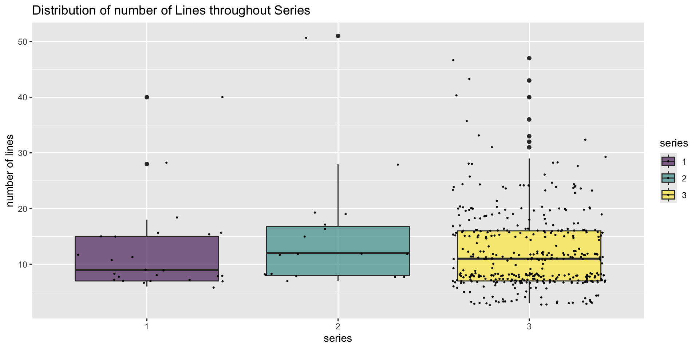

How I made a word cloud of Emily Dickinson’s Poems
The Data
This is analysis of a data set of all of Emily Dickinson’s poems, which can be found at https://www.gutenberg.org/files/12242/12242-h/12242-h.htm. I first decided to organize the data as a long data frame. Each unit of observation is a poem. The table includes three columns, the series, ID, and text of the poem for each unit of observation.
Trying to Analyze It
I made some plots investigating the number of lines in each poem, but they weren’t very satisfying.
Problem with Plotting Words
How do you make a plot that visualizes text?
Browsing for Inspiration
- Looking at examples of different kinds of plots
Wordcloud2
wordcloud2() from the wordcloud2 package allows me to create a word cloud from a data frame where a unit of observation is a word and the number of times it appears in the text.
word_freq <- data.frame(text = str_c(poems$poem)) |>
mutate(text = tolower(text)) |>
mutate(text = str_remove_all(text, '[[:punct:]]|\\|')) |>
mutate(tokens = str_split(text, "\\s+")) |>
unnest(cols = c(tokens)) |>
count(tokens) |>
arrange(desc(n)) |>
rename(word = tokens, freq = n)
wordcloud2(data = word_freq, size = 2.5)Ugly Plot
Spacy & Spacyr
Spacy is a powerful python based Natural Language Processing package. Spacyr is an R wrapper for the spacy package.
Using Spacyr
I don’t know how to use spacyr, so I borrowed this chunk of code from a generous user on stack exchange.
spacy_install()
spacy_initialize(model = "en_core_web_sm")
nouns <- unique((str_c(poems$poem) |> tolower() |>
spacy_parse(pos = TRUE) |> unnest_tokens(word, token) |>
filter(pos == "NOUN"))[["word"]])
excluded_words <- c("t", "so", "by", "be", "go", "tell")It provides a list of all the nouns in a string of text. I fed it a big combined string of all the text from my poem column. I also included a secondary list of words that spacyr missed but I did not consider nouns.
Pretty Plot
After filtering ‘word_freq’ for words in my noun list and not in my excluded words list, I was left with a clean word cloud.